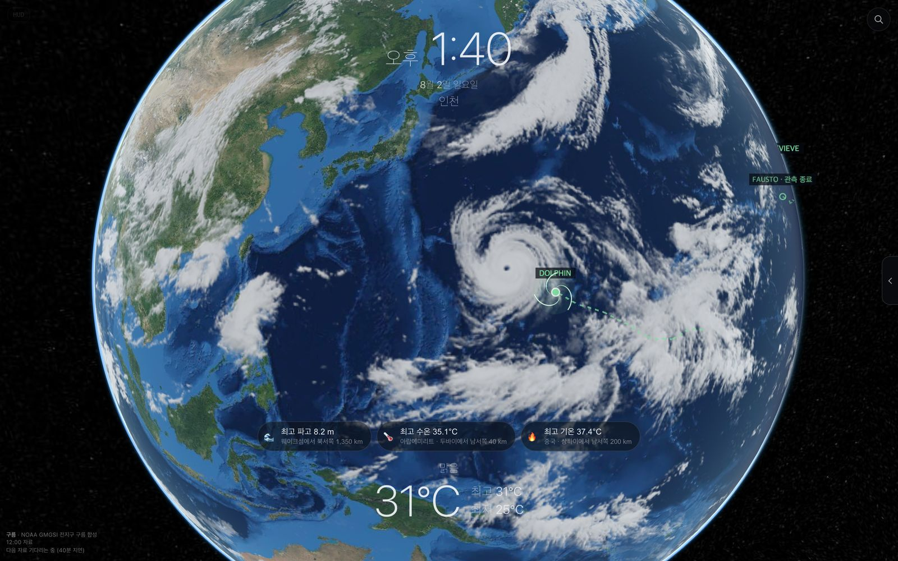

태풍 — 과거의 비슷한 태풍들은 이후 어디로 갔나
1980년 이후 서태평양 태풍 1,477개의 경로를 갖고 있습니다. 지금 태풍과 위치·진행방향·강도·계절이 비슷했던 과거 시점을 찾아, 그 태풍들이 그 뒤 72시간에 어디로 갔는지 셉니다.
고르는 방식은 저희가 지어낸 것이 아니라 이 분야의 표준(Delle Monache 외, 2013)을 따릅니다. 각 항목을 그 항목의 표준편차로 나눠 거리를 재고 가까운 순으로 뽑으며, 계절이 ±21일 안인 사례만 씁니다. 표본이 5건 미만이면 퍼센트를 아예 쓰지 않습니다 — 3건 중 2건을 67%로 적는 순간 정밀한 척하는 거짓이 되기 때문입니다.
